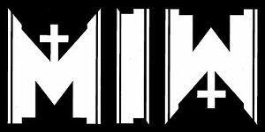

"Test1"
"Test2
 Motionless in White was founded in 2005 by members Chris Motionless, who played guitar and lead vocals, Angelo Parente on drums, Frank Polumbo on guitar and Kyle White on bass during high school. They incepted many other titles into the group until finally settling on what would be Motionless in White. Chris Motionless and other members have noted bands such as Poison the Well, Slipknot, Marilyn Manson, Johnny Cash, Depeche Mode, and other musical groups as their inspiration. In 2005 they released their self-distributed demo.[2] Within the year after the release of their demo, new member Josh Balz was added as the band's keyboardist, Frank Polumbo took over on bass and new members, Michael Costanza and Thomas "TJ" Bell, were added to the band as the new guitarists, moving Chris Motionless solely to lead vocals.[2] the band was discovered by Zach Neil while performing at a local nightclub called The Staircase. Neil signed the band first to management and then later to his record label Masquerade recordings. They recorded their first EP The Whorror which was produced by Zach Neil and mixed by Dan Malsch and released it through Masquerade Recordings/Warner music group in 2007On May 6, 2018, Chris Motionless announced via Instagram that a new record would be released in 2019. He claimed that he, along with Ryan Sitkowski and Ricky Olson, would begin full-time writing prior to touring with Warped Tour that summer. Throughout the summer of 2018, the band embarked on the final cross-country run of Vans Warped Tour, spanning from June 21 to August 5, 2018. After the departure of Devin Sola, the band reunited with former guitarist TJ Bell for the tour. Once the tour wrapped, the band took the rest of the year off, with the exception of a few festivals, Halloween shows, and a club show in their hometown of Scranton, to work on the upcoming album. For their final appearances of 2018, Justin Morrow of Ice Nine Kills toured with them on bass guitar.